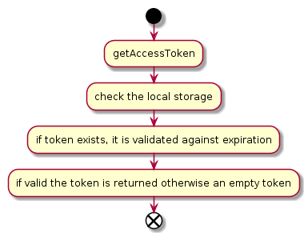
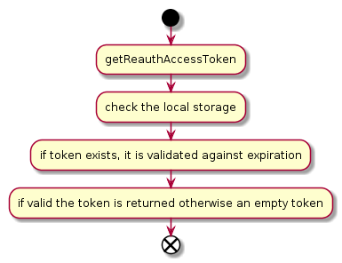
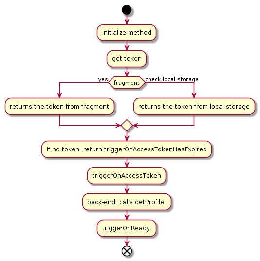
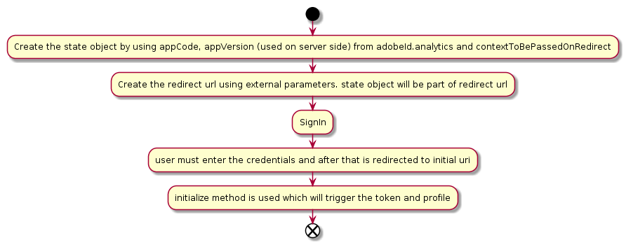
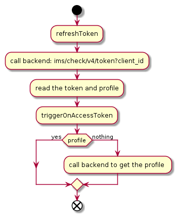
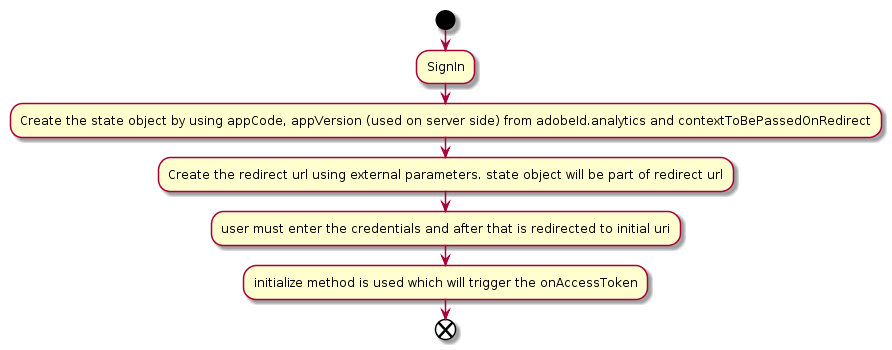
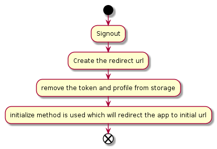
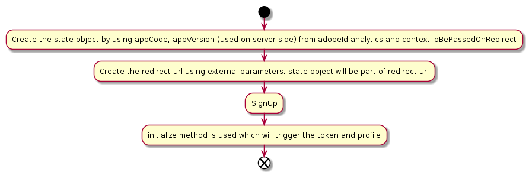

AdobeIdData the values for adobeId are read from window.adobeid or passed by using the constructor
instance of CsrfService
Represents the class used to call the back-end methods; it is visible ONLY because this is the only way t mock the api calls during functional tests
flag used to block the access to signin, signout functions in case the library is not fully initialized { Boolean }; true if library is initialized, otherwise false
Profile service instance used for profile management
Service Request object used for token and profile services. contains the clientId, scope and imsApis instance
Token Service instance used for token management
AdobeIdData the values for adobeId are read from window.adobeid or passed by using the constructor
represents the adobe ims library version
method used to sign in using an external token
token used for authorize; if the token is empty, the user will be redirected to the sign in screen
object sent from outside in order to have the possibility to override the default values when the redirect uri is created
represents the context which is passed during redirect
function used to check is initialized; in case of false, an error is triggered
disable the logging mechanism
enable the logging mechanism
method used during initialization in order to get a ijt token https://wiki.corp.adobe.com/display/ims/Implicit+Jump+Tokens
value used for token excahnge (other than the one from adobeid)
ijt response
Returns the access token value from the local storage

Returns the reauth access token value from the local storage

method used to retrieve the token release flags
Retrieve the access token that satisfies the provided PBA policy, with a validity of at least [given] millis. If the current access token in Storage satisfies the policy and is valid for at least the required time, it will be returned.
Otherwise, we will call the /check/token API with the pba_policy as parameter.
The API will either return a token, if the current user session knobs satisfy the policy, or it will return a PBA ride error, with a jump url, so the user performs the required actions for the session to become compliant with the policy.
policy identifier (name)
value in millis. If the current token's expiry time is sooner than this, the token will be considered unusable
in case a PBA ride error is thrown, this will be sent on the redirect back to the lib
any other parameters to be sent to the check/token API
Exchange the user's access_token for a Transitory Access Code (TAC) for target client and scope
object used in order to update the default api values
Method called on library initialization or page reloading 
Note: this method is automatically called on every page reload;
Allows a client to launch a system-browser and arrive at another IMS-integrated application https://wiki.corp.adobe.com/pages/viewpage.action?spaceKey=ims&title=IMS+API+-+jumptoken
object used to override the default request values
IJumpTokenResponse
method used to get the social providers. returns Promise - can be used to determine when the call has been ended and read the social providers response
pass the redirect url from the popup window to parent
represents the redirect url after user has signed in
represents the authorization redirect response
method used in case the existent token has expired
method used to process the token and profile
represents the token and profile received from back-end
process the initialize exception; this method is the first method called in case there was an error during initialize flow; check if the exception type is TokenExpiredException and pass the flow to the verifyCsrfException
represent the exception received during the initialize
method called after a successful call to the getTokenAndProfile method in order to process the token response tokenProfile: TokenProfileResponse - contains the token fields and eventually the user profile
Promise
Method used to reAuthenticate the user

object sent from outside in order to use diferent values for reAuthenticate
; represents the re authenticate value. available values are: check and force. default value is "check"
represents the context which is passed during redirect
Refresh the existing token.

external parameters sent from outside of the library
undocumented flag signaling that the call was made from auto-refresh context. do not set! Note: if refresh token API fails, the triggerOnAccessTokenHasExpired will be triggered
restore the window hash value to the initial one
set a new token into the local storage
Method used to redirect the user to signin url

object sent from outside in order to have the possibility to override the default values when the redirect uri is created
represents the context which is passed during redirect
represents the grant type used for sign in flow
sign in with social providers
provider name used for sign in
external parameters sent by developer
state of the application
Method used for sign out the user

object sent from outside in order to have the possibility to override the default values when the redirect uri is created
Method used to redirect the user to the signup screen

object sent from outside in order to use diferent values for signUp
represents the context which is passed during redirect
The purpose is to sign in with a social account without navigating outside the page (i.e. via Ajax calls only)
containing the social provider and the token obtained
object used to override the default request values
TokenProfileResponse with the response from the IJT exchange Will initiate a signIn flow if the response is a ride error of type 'ride_AdobeID_social`
retreive a new token and profile for the input user id
represents the user id used to get the new token and profile
external parameters sent from outside of the library
instance of AdobeIMS
a promise which is resolved as true in case the token is valid otherwise false validate the existing token;
method called in case of exception on initialize. if error type is CSRF, it calls the signOut methods
method called in case of exception on initialize. if error is RideError, it redirects to the jump url from RideException.jump.
a rejected promise with the given ex
Same as verifyRideErrorExceptionStrict, but returns null if ex is not RideException
Generated using TypeDoc
Class used as a facade for ims library in order to provide public access to library functionalities